전기기능사 (2016-04-02 기출문제)
1과목: 전기 이론
1. 다음 ( )안의 알맞은 내용으로 옳은 것은?
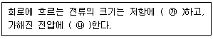
- ㉮ 비례, ㉯ 비례
- ㉮ 비례, ㉯ 반비례
- ㉮ 반비례, ㉯ 비례
- ㉮ 반비례, ㉯ 반비례
(정답률: 87%)

2. 초산은(AgNO3) 용액에 1A의 전류를 2시간 동안 흘렸다. 이때 은의 석출량(g)은? (단, 은의 전기 화학당량은 1.1×10-3g/C이다.)
- 5.44
- 6.08
- 7.92
- 9.84
(정답률: 67%)
3. 평균 반지름이 10㎝이고 감은 횟수 10회의 원형 코일에 5A의 전류를 흐르게 하면 코일 중심의 자장의 세기(AT/m)는?
- 250
- 500
- 750
- 1000
(정답률: 50%)
4. 3V의 기전력으로 300C의 전기량이 이동할 때 몇 J의 일을 하게 되는가?
- 1200
- 900
- 600
- 100
(정답률: 85%)
5. 충전된 대전체를 대지(大地)에 연결하면 대전체는 어떻게 되는가?
- 방전한다.
- 반발한다.
- 충전이 계속된다.
- 반발과 흡인을 반복한다.
(정답률: 84%)
6. 반자성체 물질의 특색을 나타낸 것은? (단, μs는 비투자율이다.)
- μs > 1
- μs ≫ 1
- μs = 1
- μs < 1
(정답률: 68%)
7. 비사인파 교류회로의 전력에 대한 설명으로 옳은 것은?
- 전압의 제3고조파와 전류의 제3고조파 성분 사이에서 소비전력이 발생한다.
- 전압의 제2고조파와 전류의 제3고조파 성분 사이에서 소비전력이 발생한다.
- 전압의 제3고조파와 전류의 제5고조파 성분 사이에서 소비전력이 발생한다.
- 전압의 제5고조파와 전류의 제7고조파 성분 사이에서 소비전력이 발생한다.
(정답률: 74%)
8. 2μF, 3μF, 5μF인 3개의 콘덴서가 병렬로 접속되었을 때의 합성 정전용량(μF)은?
- 0.97
- 3
- 5
- 10
(정답률: 84%)
9. PN접합 다이오드의 대표적인 작용으로 옳은 것은?
- 정류작용
- 변조작용
- 증폭작용
- 발진작용
(정답률: 82%)
10. R=2Ω, L=10mH, C=4μF으로 구성되는 직렬 공진회로의 L과 C에서의 전압 확대율은?
- 3
- 6
- 16
- 25
(정답률: 39%)
11. 최대눈금 1A, 내부저항 10Ω의 전류계로 최대 101A까지 측정하려면 몇 Ω의 분류기가 필요 한가?
- 0.01
- 0.02
- 0.⑤
- 0.1
(정답률: 58%)
12. 전력과 전력량에 관한 설명으로 틀린 것은?
- 전력은 전력량과 다르다.
- 전력량은 와트로 환산된다.
- 전력량은 칼로리 단위로 환산된다.
- 전력은 칼로리 단위로 환산할 수 없다.
(정답률: 62%)
13. 전자 냉동기는 어떤 효과를 응용한 것인가?
- 제벡효과
- 톰슨효과
- 펠티에효과
- 주울효과
(정답률: 79%)
14. 자속밀도가 2Wb/m2인 평등 자기장 중에 자기장과 30°의 방향으로 길이 0.5m인 도체에 8A의 전류가 흐르는 경우 전자력(N)은?
- 8
- 4
- 2
- 1
(정답률: 64%)
15. 어떤 3상 회로에서 선간전압이 200V, 선전류 25A, 3상 전력이 7kW이었다. 이때의 역률은 약 얼마인가?
- 0.65
- 0.73
- 0.81
- 0.97
(정답률: 46%)
16. 3상 220V, Δ결선에서 1상의 부하가 Z=8+j6Ω이면 선전류(A)는?
- 11
- 22√3
- 22
- 22 / √3
(정답률: 67%)
17. 환상솔레노이드에 감겨진 코일에 권회수를 3배로 늘리면 자체 인덕턴스는 몇 배로 되는가?
- 3
- 9
- 1/3
- 1/9
(정답률: 43%)
18. +Q1(C)과 -Q2(C)의 전하가 진공 중에서 r(m)의 거리에 있을 때 이들 사이에 작용하는 정전기력 F(N)는?
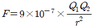
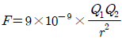
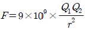
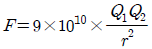
(정답률: 73%)
19. 다음에서 나타내는 법칙은?
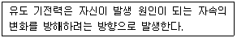
- 줄의 법칙
- 렌츠의 법칙
- 플레밍의 법칙
- 패러데이의 법칙
(정답률: 77%)
20. 임피던스 Z=6+j8Ω에서 서셉턴스(℧)는?
- 0.06
- 0.08
- 0.6
- 0.8
(정답률: 49%)
2과목: 전기 기기
21. 3상 유도전동기의 회전방향을 바꾸기 위한 방법으로 옳은 것은?
- 전원의 전압과 주파수를 바꾸어 준다.
- Δ-Y 결선으로 결선법을 바꾸어 준다.
- 기동보상기를 사용하여 권선을 바꾸어 준다.
- 전동기의 1차 권선에 있는 3개의 단자 중 어느 2개의 단자를 서로 바꾸어 준다.
(정답률: 75%)
22. 발전기를 정격전압 220V로 전부하 운전하다가 무부하로 운전 하였더니 단자전압이 242V가 되었다. 이 발전기의 전압변동률(%)은?
- 10
- 14
- 20
- 25
(정답률: 64%)
23. 6극 직렬권 발전기의 전기자 도체 수 300, 매극 자속 0.02Wb, 회전수 900rpm일 때 유도기전력(V)은?
- 90
- 110
- 220
- 270
(정답률: 44%)
24. 동기조상기의 계자를 부족여자로 하여 운전하면?
- 콘덴서로 작용
- 뒤진역률 보상
- 리액터로 작용
- 저항손의 보상
(정답률: 64%)
25. 3상 교류 발전기의 기전력에 대하여
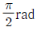
뒤진 전기자 전류가 흐르면 전기자 반작용은?- 횡축 반작용으로 기전력을 증가시킨다.
- 증자 작용을 하여 기전력을 증가시킨다.
- 감자 작용을 하여 기전력을 감소시킨다.
- 교차 자화작용으로 기전력을 감소시킨다.
(정답률: 68%)
26. 전기기기의 철심 재료로 규소 강판을 많이 사용하는 이유로 가장 적당한 것은?
- 와류손을 줄이기 위해
- 구리손을 줄이기 위해
- 맴돌이 전류를 없애기 위해
- 히스테리시스손을 줄이기 위해
(정답률: 72%)
27. 역병렬 결합의 SCR의 특성과 같은 반도체 소자는?
- PUT
- UJT
- Diac
- Triac
(정답률: 71%)
28. 전기기계의 효율 중 발전기의 규약 효율 ηG는 몇 %인가? (단, P는 입력, Q는 출력, L은 손실이다.)
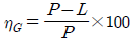
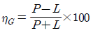
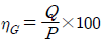
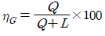
(정답률: 64%)
29. 20kVA의 단상 변압기 2대를 사용하여 V-V 결선으로 하고 3상 전원을 얻고자 한다. 이때 여기에 접속시킬 수 있는 3상 부하의 용량은 약 몇 kVA인가?
- 34.6
- 44.6
- 54.6
- 66.6
(정답률: 56%)
30. 동기 발전기의 병렬운전 조건이 아닌 것은?
- 유도 기전력의 크기가 같을 것
- 동기발전기의 용량이 같을 것
- 유도 기전력의 위상이 같을 것
- 유도 기전력의 주파수가 같을 것
(정답률: 65%)
31. 직류 분권전동기의 기동방법 중 가장 적당한 것은?
- 기동 토크를 작게 한다.
- 계자 저항기의 저항값을 크게 한다.
- 계자 저항기의 저항값을 0으로 한다.
- 기동저항기를 전기자와 병렬접속 한다.
(정답률: 52%)
32. 극수 10, 동기속도 600rpm인 동기 발전기에서 나오는 전압의 주파수는 몇 Hz인가?
- 50
- 60
- 80
- 120
(정답률: 50%)
33. 변압기유의 구비조건으로 틀린 것은?
- 냉각효과가 클 것
- 응고점이 높을 것
- 절연내력이 클 것
- 고온에서 화학반응이 없을 것
(정답률: 72%)
34. 동기기 손실 중 무부하손(no load loss)이 아닌 것은?
- 풍손
- 와류손
- 전기자 동손
- 베어링 마찰손
(정답률: 48%)
35. 직류 전동기의 제어에 널리 응용되는 직류-직류 전압 제어장치는?
- 초퍼
- 인버터
- 전파정류회로
- 사이크로 컨버터
(정답률: 66%)
36. 동기 와트 P2, 출력 P0, 슬립 s, 동기속도 Ns, 회전속도 N, 2차 동손 P2c일 때 2차 효율 표기로 틀린 것은?
- 1-s
- P2c/P2
- P0/P2
- N/Ns
(정답률: 56%)
37. 변압기의 결선에서 제3고조파를 발생시켜 통신선에 유도장애를 일으키는 3상 결선은?
- Y-Y
- Δ-Δ
- Y-Δ
- Δ-Y
(정답률: 54%)
38. 부흐홀츠 계전기의 설치위치로 가장 적당한 곳은?
- 콘서베이터 내부
- 변압기 고압측 부싱
- 변압기 주 탱크 내부
- 변압기 주 탱크와 콘서베이터 사이
(정답률: 80%)
39. 3상 유도전동기의 운전 중 급속 정지가 필요할 때 사용하는 제동방식은?
- 단상 제동
- 회생 제동
- 발전 제동
- 역상 제동
(정답률: 74%)
40. 슬립 4%인 유도 전동기의 등가 부하 저항은 2차 저항의 몇 배인가?
- 5
- 19
- 20
- 24
(정답률: 44%)
3과목: 전기 설비
41. 역률개선의 효과로 볼 수 없는 것은?
- 전력손실 감소
- 전압강하 감소
- 감전사고 감소
- 설비 용량의 이용률 증가
(정답률: 62%)
42. 옥내배선 공사에서 절연전선의 피복을 벗길 때 사용하면 편리한 공구는?
- 드라이버
- 플라이어
- 압착펜치
- 와이어스트리퍼
(정답률: 85%)
43. 전기설비기술기준의 판단기준에 의하여 애자사용공사를 건조한 장소에 시설하고자 한다. 사용 전압이 400V 미만인 경우 전선과 조영재 사이의 이격거리는 최소 몇 ㎝이상 이어야 하는가?
- 2.5
- 4.5
- 6.0
- 12
(정답률: 57%)
44. 전선 접속 방법 중 트위스트 직선 접속의 설명으로 옳은 것은?
- 연선의 직선 접속에 적용된다.
- 연선의 분기 접속에 적용된다.
- 6mm2 이하의 가는 단선인 경우에 적용된다.
- 6mm2 초과의 굵은 단선인 경우에 적용된다.
(정답률: 74%)
45. 건축물에 고정되는 본체부와 제거할 수 있거나 개폐할 수 있는 커버로 이루어지며 절연전선, 케이블 및 코드를 완전하게 수용할 수 있는 구조의 배선설비의 명칭은?
- 케이블 래더
- 케이블 트레이
- 케이블 트렁킹
- 케이블 브라킷
(정답률: 59%)
46. 금속전선관 공사에서 금속관에 나사를 내기위해 사용하는 공구는?
- 리머
- 오스터
- 프레서 툴
- 파이프 벤더
(정답률: 69%)
47. 성냥을 제조하는 공장의 공사 방법으로 틀린 것은?
- 금속관 공사
- 케이블 공사
- 금속 몰드 공사
- 합성수지관 공사(두께 2mm 미만 및 난연성이 없는 것은 제외)
(정답률: 69%)
48. 콘크리트 조영재에 볼트를 시설할 때 필요한 공구는?
- 파이프 렌치
- 볼트 클리퍼
- 노크아웃 펀치
- 드라이브 이트
(정답률: 55%)
49. 실내 면적 100m2인 교실에 전광속이 2500lm인 40W 형광등을 설치하여 평균조도를 150lx로 하려면 몇 개의 등을 설치하면 되겠는가? (단, 조명률은 50%, 감광 보상률은 1.25로 한다.)
- 15개
- 20개
- 25개
- 30개
(정답률: 44%)
50. 교류 배전반에서 전류가 많이 흘러 전류계를 직접 주 회로에 연결할 수 없을 때 사용하는 기기는?
- 전류 제한기
- 계기용 변압기
- 계기용 변류기
- 전류계용 절환 개폐기
(정답률: 57%)
51. 플로어 덕트 공사의 설명 중 틀린 것은?(오류 신고가 접수된 문제입니다. 반드시 정답과 해설을 확인하시기 바랍니다.)
- 덕트의 끝 부분은 막는다.
- 플로어 덕트는 특별 제3종 접지공사로 하여야 한다.
- 덕트 상호 간 접속은 견고하고 전기적으로 완전하게 접속 하여야 한다.
- 덕트 및 박스 기타 부속품은 물이 고이는 부분이 없도록 시설하여야 한다.
(정답률: 65%)
52. 진동이 심한 전기 기계·기구의 단자에 전선을 접속할 때 사용되는 것은?
- 커플링
- 압착단자
- 링 슬리브
- 스프링 와셔
(정답률: 70%)
53. 전기설비기술기준의 판단기준에 의하여 가공전선에 케이블을 사용하는 경우 케이블은 조가용 선에 행거로 시설하여야 한다. 이 경우 사용전압이 고압인 때에는 그 행거의 간격은 몇 ㎝ 이하로 시설하여야 하는가?
- 50
- 60
- 70
- 80
(정답률: 51%)
54. 라이팅 덕트 공사에 의한 저압 옥내배선의 시설 기준으로 틀린 것은?
- 덕트의 끝부분은 막을 것
- 덕트는 조영재에 견고하게 붙일 것
- 덕트의 개구부는 위로 향하여 시설할 것
- 덕트는 조영재를 관통하여 시설하지 아니할 것
(정답률: 66%)
55. 전기설비기술기준의 판단기준에 의한 고압 가공전선로 철탑의 경간은 몇 m 이하로 제한하고 있는가?
- 150
- 250
- 500
- 600
(정답률: 59%)
56. A종 철근 콘크리트주의 길이가 9m이고, 설계 하중이 6.8kN인 경우 땅에 묻히는 깊이는 최소 몇 m 이상이어야 하는가?
- 1.2
- 1.5
- 1.8
- 2.0
(정답률: 52%)
57. 전선의 접속법에서 두 개 이상의 전선을 병렬로 사용하는 경우의 시설기준으로 틀린 것은?
- 각 전선의 굵기는 구리인 경우 50mm2 이상이어야 한다.
- 각 전선의 굵기는 알루미늄인 경우 70mm2 이상이어야 한다.
- 병렬로 사용하는 전선은 각각에 퓨즈를 설치할 것
- 동극의 각 전선은 동일한 터미널러그에 완전히 접속할 것
(정답률: 61%)
58. 정격전류가 50A인 저압전로의 과전류차단기를 배선용차단기로 사용하는 경우 정격전류의 2배의 전류가 통과하였을 경우 몇 분 이내에 자동적으로 동작하여야 하는가?(오류 신고가 접수된 문제입니다. 반드시 정답과 해설을 확인하시기 바랍니다.)
- 2분
- 4분
- 6분
- 8분
(정답률: 43%)
59. 서로 다른 굵기의 절연전선을 동일 관내에 넣는 경우 금속관의 굵기는 전선의 피복절연물을 포함한 단면적의 총합계가 관의 내 단면적의 몇 % 이하가 되도록 선정하여야 하는가?
- 32
- 38
- 45
- 48
(정답률: 51%)
60. 제3종 접지공사를 시설하는 주된 목적은?(오류 신고가 접수된 문제입니다. 반드시 정답과 해설을 확인하시기 바랍니다.)
- 기기의 효율을 좋게 한다.
- 기기의 절연을 좋게 한다.
- 기기의 누전에 의한 감전을 방지한다.
- 기기의 누전에 의한 역률을 좋게 한다.
(정답률: 59%)